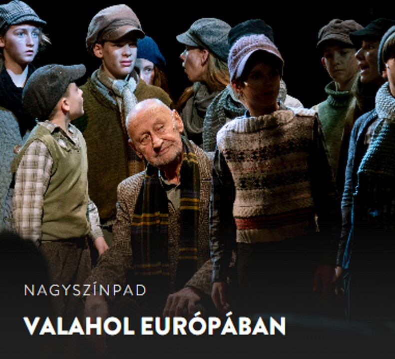
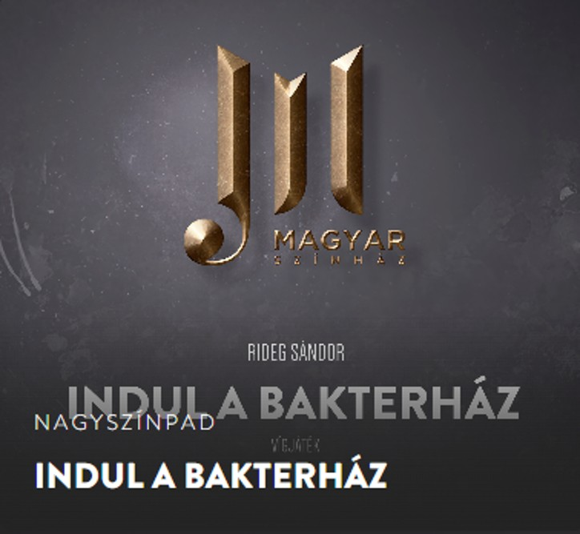

PROGRAMAJÁNLÓK
2026. tavasz
2026. március – április

KOLDUS ÉS KIRÁLYFI
Magyar Színház, Budapest
A londoni utcák nyomorában élő koldusfiú és a paloták aranyfényében nevelkedő trónörökös egy napon egymás tükörképére ismer – és helyet cserélnek. A rongyok között megtapasztalt szabadság, a selymek mögött rejtőző magány, az utcák lármája és a palota hideg pompája mind új arcát mutatja meg számukra. Ahogy a két fiú belekóstol a másik életébe, megtanulják, mit ér a hatalom, és mit ér az ember, ha nincs benne emberség.
Mark Twain klasszikus történetének zenés színpadi változata humort és felfedezést hoz – de legfőképp megértést és együttérzést. Egy színpadra vitt kaland, amely megmutatja: az emberi értékek túlmutatnak a társadalmi különbségeken.
További részletek... Jegyvásárlás
VAGY

Jegyvásárlás
VALAHOL EURÓPÁBAN
Magyar Színház, Budapest
A háború mindent elvett tőlük – az otthonukat, a családjukat, a gyermekkorukat. Bandába verődve, éhesen és fázva járják az utcákat, hogy valahogy túléljenek. Mégis kapaszkodnak az életbe. Egy idős zenész romos kastélyában menedékre lelnek, ahol nemcsak falak, hanem dallamok és remény öleli körül őket. Itt, a romok között születik meg valami, amit már rég elfelejtettek: bizalom, barátság és emberség.
De a világ odakint továbbra is kegyetlen: üldözőik közelebb járnak, mint gondolnák. Elbújni, vagy kiállni egymásért? A döntés mindannyiuk sorsát megpecsételheti. Barátság, bátorság, összetartás – egy felemelő musical a szeretet erejéről, amely még a háború legsötétebb árnyékában is utat mutat.
További részletek... Jegyvásárlás
VAGY

Jegyvásárlás
INDUL A BAKTERHÁZ
Magyar Színház, Budapest
Ha én egyszer kinyitom a számat…” – és Regős Bendegúz tényleg ki is nyitja. A nagyszájú kamasz kimarad az iskolából, így kerül tehénpásztornak a vasút mellé, a harapós természetű bakter és a még harapósabb anyósa, a rettegett Büdös Banya mellé.
De Bendegúzt nem olyan fából faragták, hogy megijedjen pár felnőttől. Csínyt űz, bosszút forral, és közben alaposan felforgatja az egész tanyavilágot. A történet Rideg Sándor 1939-es regényén és a 1979-es kultikus filmen alapul, most pedig a Magyar Színház színpadán kel újra életre.
További részletek... Jegyvásárlás
ÉVES PROGRAMAJÁNLÓK
Érdemes az egész éves programajánlót átolvasni a hatalmas érdeklődés miatt.